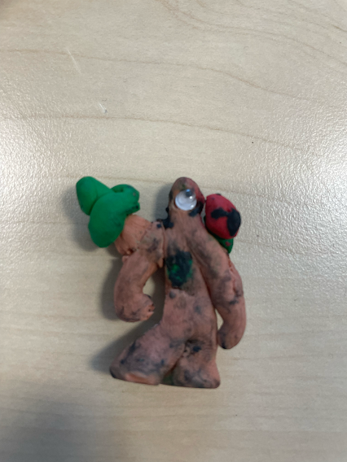
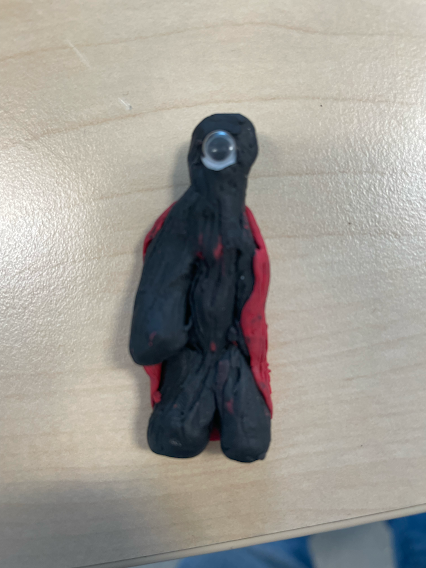
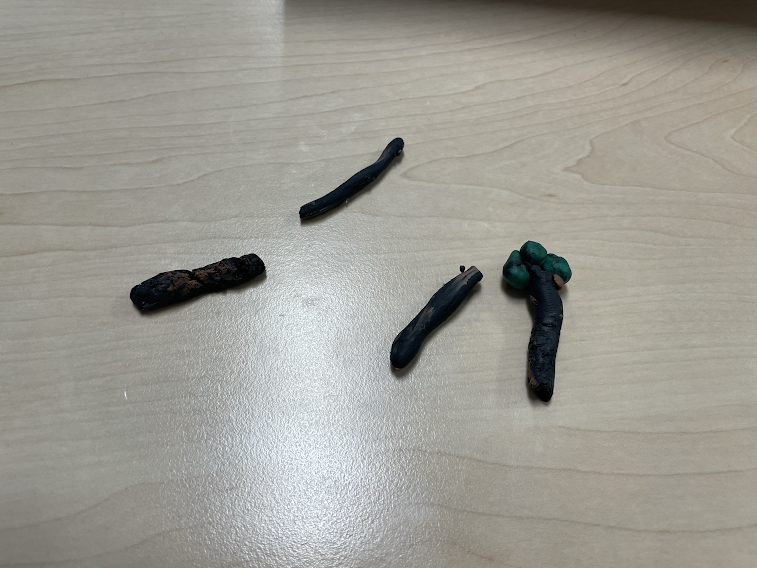
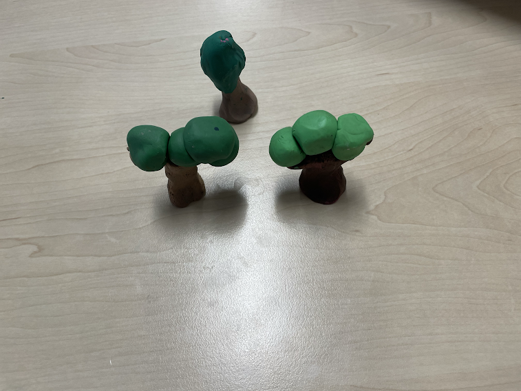
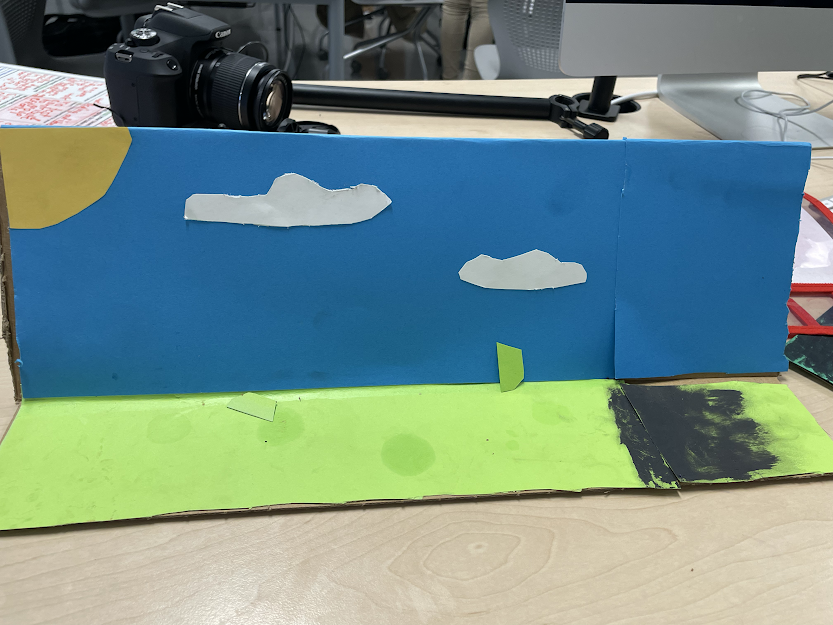
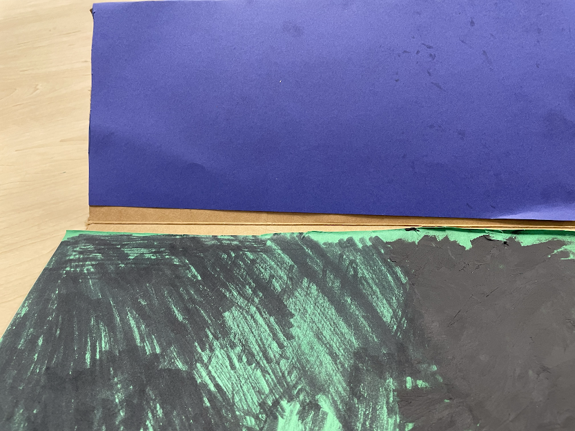

Storyboard, Character, and Set
Storyboard:
Originally, I was really lost and confused on what we wanted to do for a stop motion story about pollution. However, I just settled up with the idea to make embodiements
for nature and pollution. Nature would be the protag, and Pollution would be the antag. Nature would come home from doing whatever, to find a newly awakened and
extremely dangerous Pollution who had just discovered their power to wither away any living form. Pollution withered away one of the trees surrounding Natures home, and being
Nature, it is severely hurt and runs to see what happened to the tree, only to find it destroyed by Pollution, who is now gone. Nature knows that ths is not a one time thing, and sets
out to find Pollution. We get a year time skip, where Nature is now old and also withering away from the damage caused by Pollution. As inspecting a withered tree that is
still standing, nature comes to the deduction that Pollution is getting weaker. Alas, Pollution is standing behind Nature, and they have a big fight. During the fight, Nature
discovers that Pollution is his mirrored virsion, and that Nature also has the ability to make things flourish, unlike Pollutions wither. Nature makes himself flourish back to
his prime and is flourishing with life, and is able to destroy Pollution and go back to his home while reversing all of Pollutions wither that he had done.
Character:


The green clay figure is nature, while the black one is Pollution. As you can see, Pollutions right arm is significantly smaller than the left; this is to show that they first discovered their power when they touched their arm, which caused it to wither away, not fully however.
Set:




(1) These are decayed trees, they went on the withered side of set 1 and all of set 2. (2) These are the good trees that are unaffected by Pollution because of Nature's prescence, however they are shown briefly. (3) This is the first set, where Nature first catches wind of Pollution's existence. It has a sun, some shrubs that fell off, and some clouds that never move glued onto the "sky". (4) This is the set where the most conflict and resolution happens, however there is not much actually going on with the set itself. However, this is where we had began to utilize the digital options such as zooming in and such.
Technology